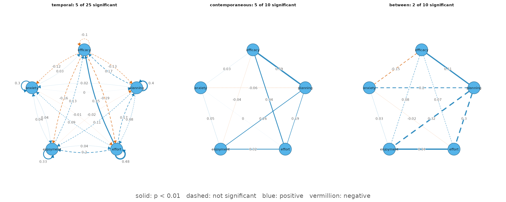
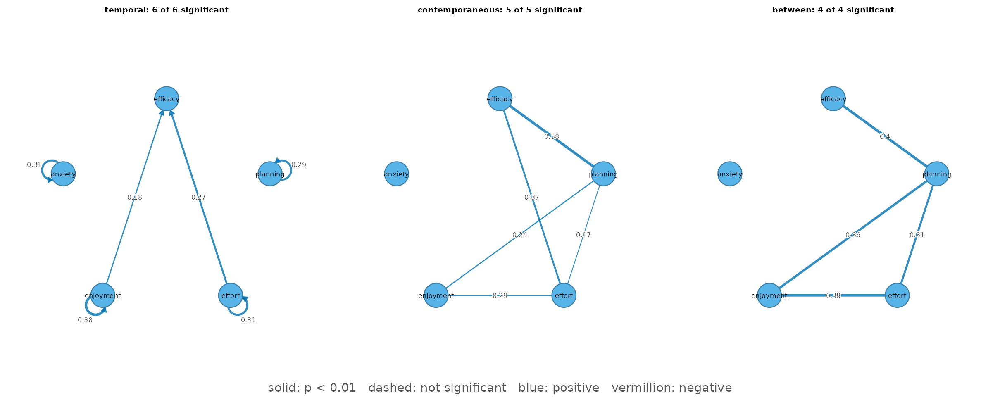

Panel graphical VAR: temporal, contemporaneous, and between-person networks
Written by Mohammed Saqr and Sonsoles López-Pernas
Source:vignettes/panel-graphical-var.Rmd
panel-graphical-var.RmdPanel studies measure the same people on a few occasions, for instance weekly during a course. Two different questions can be asked of such data. The between-person question is whether students who are generally more efficacious also plan more. The within-person question is whether a student who feels more efficacious than usual in one week plans more than usual, in the same week or in the next. The answers can differ, and a cross-sectional network of the pooled data mixes them. The panel graphical vector-autoregressive model (panel-GVAR; Epskamp, 2020) separates each person’s scores into a stable personal level and weekly deviations from it, and estimates three networks: a temporal network of lagged effects between the deviations, a contemporaneous network of deviations that move together within a week, and a between-person network of the stable levels.
This article fits the model to a four-wave panel of five self-regulated learning indicators, reads the three networks with their uncertainty, selects a sparser model by two methods, and evaluates the fit, the numerical solution and the division of variance between and within persons.
Data
srl_panel is a synthetic panel of 100 students measured
in four consecutive weeks. It was simulated from a panel-GVAR whose
structure was taken from real experience-sampling data (see
?srl_panel), so it is realistic and can be shared without
restriction. The data are in long format, one row per student per
week.
-
Person:
student, the student identifier. -
Occasion:
week, from 1 to 4. -
Nodes: five indicators on 0–100 scales:
efficacy,planning,effort,enjoymentandanxiety.
head(srl_panel)
#> student week efficacy planning effort enjoyment anxiety
#> 1 S001 1 38.7 54.1 52.1 53.1 44.2
#> 2 S001 2 32.9 55.4 50.7 62.2 48.8
#> 3 S001 3 34.5 40.9 52.9 50.3 36.9
#> 4 S001 4 28.6 44.5 41.0 42.4 39.6
#> 5 S002 1 45.0 54.7 48.6 48.1 38.4
#> 6 S002 2 62.8 67.2 63.7 47.5 44.8
vars <- c("efficacy", "planning", "effort", "enjoyment", "anxiety")The model
For person at wave , the vector of scores is decomposed as
where is the grand mean, the person’s stable deviation from it, and the person’s deviation from their own level at wave . The three networks are:
- temporal: the matrix of lag-1 regression effects between deviations. Edges are directed; a self-loop is an autoregressive effect, the carry-over of a deviation to the next wave;
- contemporaneous: the partial correlations of the innovations , the deviations that occur together within a wave after the lagged effects are accounted for;
- between-person: the partial correlations of the stable levels .
The parameters are estimated by maximum likelihood, and each edge has a standard error and a Wald test. The model assumes that the means do not change across waves.
What do the three networks show?
panel_gvar() takes the data with the names of the
variables, the person identifier and the wave. By default every edge is
estimated and kept, and an edge is flagged as significant at
.
fit <- panel_gvar(srl_panel, vars = vars, id = "student", wave = "week")
fit
#> <psychnet_panelgvar> panel graphical VAR (temporal + contemporaneous + between)
#> persons: 100 waves: 4 nodes: 5
#> edges (significant/estimated, p < 0.01): temporal 1/20 (+4/5 autoregressive) contemporaneous 5/10 between 2/10
#> selection: none (full model)
#> fit: chisq(170) = 207.19, p = 0.0273 CFI = 0.957 TLI = 0.946 RMSEA = 0.047
#> optimality (ML score): 8.16e-13
#> starts: 3 of 3 reached the best saturated optimumThe model has 100 students in 4 waves. Of the 20 lagged effects between variables, 1 is significant, and 4 of the 5 autoregressive effects are; 5 of the 10 contemporaneous and 2 of the 10 between-person edges are significant. The edge table has one row per edge, with its standard error, p-value and 95% Wald interval:
head(as.data.frame(fit), 8)
#> network from to weight se p ci_lower
#> 1 temporal anxiety anxiety 0.296628278 0.10027278 0.003094278 0.1000972
#> 2 temporal anxiety efficacy 0.026009263 0.08031053 0.746045017 -0.1313965
#> 3 temporal anxiety effort -0.014936851 0.08549642 0.861309611 -0.1825068
#> 4 temporal anxiety enjoyment 0.036480078 0.08218780 0.657142045 -0.1246051
#> 5 temporal anxiety planning 0.003375992 0.07857850 0.965730789 -0.1506350
#> 6 temporal efficacy anxiety -0.122338773 0.13119129 0.351066802 -0.3794690
#> 7 temporal efficacy efficacy -0.096672635 0.13467200 0.472857381 -0.3606249
#> 8 temporal efficacy effort -0.185033790 0.13554948 0.172232751 -0.4507059
#> ci_upper significant
#> 1 0.4931593 TRUE
#> 2 0.1834150 FALSE
#> 3 0.1526331 FALSE
#> 4 0.1975652 FALSE
#> 5 0.1573870 FALSE
#> 6 0.1347914 FALSE
#> 7 0.1672796 FALSE
#> 8 0.0806383 FALSE
summary(fit)
#> network directed nodes edges significant mean_abs_weight
#> 1 temporal TRUE 5 20 1 0.1046718
#> 2 contemporaneous FALSE 5 10 5 0.1877681
#> 3 between FALSE 5 10 2 0.1831649summary() gives one row per network. The contemporaneous
and between-person edges are on average larger in absolute value (0.188
and 0.183) than the temporal ones (0.105). plot() draws the
three networks on one layout: solid edges are significant, dashed edges
are not, blue is positive and vermillion negative, and the weight is
printed on each edge.
plot(fit)
The significant edges answer the two questions separately:
- Temporal. 4 of the 5 autoregressive effects are significant (anxiety -> anxiety (0.30), effort -> effort (0.48), enjoyment -> enjoyment (0.33), planning -> planning (0.40)): a student who is above their own level in one week tends to stay above it the next. One lagged effect between variables is significant, effort -> efficacy (0.35): a week of more effort than usual is followed by a week of higher efficacy than usual.
- Contemporaneous. 5 edges (efficacy-effort (0.34), efficacy-planning (0.59), effort-enjoyment (0.32), planning-effort (0.19), planning-enjoyment (0.26)): in weeks when a student’s efficacy, planning, effort or enjoyment is above their usual level, the others tend to be too. Anxiety is not connected.
- Between-person. 2 edges (efficacy-planning (0.31), effort-enjoyment (0.34)): students with a higher personal level of efficacy tend to have a higher personal level of planning; students with a higher personal level of effort tend to have a higher personal level of enjoyment. These edges rest on only 100 personal levels and carry more uncertainty than the within-person ones.
Which edges should a sparser model keep?
Flagging significance leaves the model unchanged. Two methods select a sparser model.
select = "prune" removes every edge with
,
refits, and then adds edges back one at a time while each addition
significantly improves the fit and lowers the BIC (step-up search). The
step-up stage matters because edges can substitute for each other: an
autoregressive effect and a correlated lagged effect may each look
unnecessary while the other is present, and a single pruning pass would
remove both.
pruned <- panel_gvar(srl_panel, vars = vars, id = "student", wave = "week",
select = "prune")
pruned
#> <psychnet_panelgvar> panel graphical VAR (temporal + contemporaneous + between)
#> persons: 100 waves: 4 nodes: 5
#> edges (significant/estimated, p < 0.01): temporal 2/2 (+4/4 autoregressive) contemporaneous 5/5 between 4/4
#> selection: prune (alpha = 0.01, adjust = none; stepup (bic) re-added 3)
#> fit: chisq(200) = 227.13, p = 0.0913 CFI = 0.969 TLI = 0.966 RMSEA = 0.037
#> optimality (ML score): 5.41e-13
#> starts: 3 of 3 reached the best saturated optimumThe pruned model keeps 4 autoregressive effects, 2 lagged effects between variables, and 5 contemporaneous and 4 between-person edges. The step-up search re-added 3 edges that pruning had removed. The sparser model still fits well (CFI = 0.969, RMSEA = 0.037), so the removed edges were not needed to reproduce the data. Its edge table:
as.data.frame(pruned)
#> network from to weight se p
#> 1 temporal anxiety anxiety 0.3097634 0.10142690 2.257702e-03
#> 2 temporal effort efficacy 0.2745331 0.05772377 1.974862e-06
#> 3 temporal effort effort 0.3050205 0.06630006 4.212623e-06
#> 4 temporal enjoyment efficacy 0.1771524 0.04998380 3.938117e-04
#> 5 temporal enjoyment enjoyment 0.3811826 0.07083908 7.408767e-08
#> 6 temporal planning planning 0.2937572 0.06026909 1.093089e-06
#> 7 contemporaneous efficacy effort 0.3736857 0.05047766 1.331492e-13
#> 8 contemporaneous efficacy planning 0.5750641 0.03916613 8.322431e-49
#> 9 contemporaneous effort enjoyment 0.2875605 0.04897720 4.323548e-09
#> 10 contemporaneous planning effort 0.1747501 0.05512077 1.522752e-03
#> 11 contemporaneous planning enjoyment 0.2427458 0.04454979 5.069247e-08
#> 12 between efficacy planning 0.3994936 0.08012929 6.176604e-07
#> 13 between effort enjoyment 0.3784409 0.11858021 1.415685e-03
#> 14 between planning effort 0.3085720 0.10517305 3.346829e-03
#> 15 between planning enjoyment 0.3560514 0.10934260 1.128777e-03
#> ci_lower ci_upper significant
#> 1 0.11097033 0.5085565 TRUE
#> 2 0.16139658 0.3876696 TRUE
#> 3 0.17507478 0.4349663 TRUE
#> 4 0.07918596 0.2751189 TRUE
#> 5 0.24234055 0.5200246 TRUE
#> 6 0.17563197 0.4118825 TRUE
#> 7 0.27475132 0.4726201 TRUE
#> 8 0.49829988 0.6518283 TRUE
#> 9 0.19156696 0.3835541 TRUE
#> 10 0.06671533 0.2827848 TRUE
#> 11 0.15542977 0.3300617 TRUE
#> 12 0.24244302 0.5565441 TRUE
#> 13 0.14602795 0.6108538 TRUE
#> 14 0.10243661 0.5147074 TRUE
#> 15 0.14174384 0.5703590 TRUEBoth lagged effects lead into efficacy: a week of more effort than usual (0.27) or more enjoyment than usual (0.18) is followed by higher efficacy than usual. The contemporaneous edges are those of the full model, and the between-person network gains two edges of planning, with effort (0.31) and enjoyment (0.36), which were not significant at in the full model but are significant once the other between-person edges are removed.
plot(pruned)
select = "ebic" instead shrinks the edges with a lasso
penalty chosen by the extended BIC, the panel counterpart of the
graphical lasso. Weak edges become exactly zero in one estimation. The
estimates are penalized and therefore have no p-values;
refit = TRUE refits the selected network without the
penalty. A path of 20 penalty values keeps the example short.
lasso <- panel_gvar(srl_panel, vars = vars, id = "student", wave = "week",
select = "ebic", nlambda = 20)
summary(lasso)
#> network directed nodes edges significant mean_abs_weight
#> 1 temporal TRUE 5 2 NA 0.1436679
#> 2 contemporaneous FALSE 5 5 NA 0.3385725
#> 3 between FALSE 5 0 NA 0.0000000
as.data.frame(lasso)
#> network from to weight se p ci_lower ci_upper
#> 1 temporal anxiety anxiety 0.01126022 NA NA NA NA
#> 2 temporal efficacy efficacy 0.01940377 NA NA NA NA
#> 3 temporal effort efficacy 0.16267521 NA NA NA NA
#> 4 temporal effort effort 0.16069469 NA NA NA NA
#> 5 temporal enjoyment efficacy 0.12466058 NA NA NA NA
#> 6 temporal enjoyment enjoyment 0.25094809 NA NA NA NA
#> 7 temporal planning planning 0.17284327 NA NA NA NA
#> 8 contemporaneous efficacy effort 0.35072292 NA NA NA NA
#> 9 contemporaneous efficacy planning 0.58378554 NA NA NA NA
#> 10 contemporaneous effort enjoyment 0.29072556 NA NA NA NA
#> 11 contemporaneous planning effort 0.21147396 NA NA NA NA
#> 12 contemporaneous planning enjoyment 0.25615455 NA NA NA NA
#> significant
#> 1 NA
#> 2 NA
#> 3 NA
#> 4 NA
#> 5 NA
#> 6 NA
#> 7 NA
#> 8 NA
#> 9 NA
#> 10 NA
#> 11 NA
#> 12 NAThe lasso keeps the same two lagged effects into efficacy and the same five contemporaneous edges as pruning, and no between-person edge. It also keeps all five autoregressive effects, two of them close to zero (anxiety 0.011, efficacy 0.019). The two methods therefore agree on the within-person structure. With 100 students, the penalty is more conservative than significance-based selection for the between-person network.
How well does the model fit?
The fit indices compare the model with the saturated model, which reproduces the observed covariances exactly, and with a baseline without temporal or network structure.
as.data.frame(fit, what = "fit")
#> logl npar df chisq pvalue baseline_chisq baseline_df cfi
#> 1 -6802.528 60 170 207.1872 0.02733013 1084.025 215 0.9572082
#> tli rmsea aic bic
#> 1 0.9458809 0.04677052 13725.06 13881.37The chi-square test rejects exact fit (, ), as is common for a sample of this size, but the approximate indices show good fit: CFI = 0.957, TLI = 0.946 and RMSEA = 0.047. The model reproduces the covariances across the four waves well.
Is the estimate the maximum-likelihood solution?
The likelihood of the panel-GVAR is not convex, so the optimizer is started from three different points. At a maximum the gradient of the log-likelihood (the score) is zero; the largest remaining score is the certificate, and a value near zero shows that the estimate is a maximum. The diagnostics also report whether any parameter lies on the boundary of its admissible range, whether standard errors could be computed, and how many starts reached the same optimum.
as.data.frame(fit, what = "diagnostics")
#> n waves score boundary boundary_part se_available starts_agree
#> 1 100 4 8.159029e-13 FALSE <NA> TRUE 3
#> starts
#> 1 3The largest score is below , no parameter is on a boundary, standard errors are available, and all three starts reached the same optimum. The estimate is therefore the maximum-likelihood solution, and its standard errors can be used.
How much of each variable is stable between persons?
The variance of each variable is divided into the variance of the personal levels (between) and of the weekly deviations (within).
as.data.frame(fit, what = "variance")
#> variable between within share_between
#> 1 efficacy 65.39817 66.42409 0.4961087
#> 2 planning 72.92447 57.68286 0.5583490
#> 3 effort 82.63922 69.22678 0.5441588
#> 4 enjoyment 53.83746 65.44361 0.4513496
#> 5 anxiety 95.00513 59.25030 0.6158949Between 45% (enjoyment) and 62% (anxiety) of the variance lies between students. About half of the variation in each indicator is a stable difference between students and half a fluctuation from week to week, so both the between-person and the within-person networks describe a substantial part of the data.
What if the wave means drift?
The model assumes that the mean of each variable is the same in every
wave. If the means drift, for instance a steady decline over a term,
standardize = "z_per_wave" standardizes every variable
within every wave, which removes the drift; the edges are then on a
standardized scale.
z_fit <- panel_gvar(srl_panel, vars = vars, id = "student", wave = "week",
standardize = "z_per_wave")
subset(as.data.frame(z_fit, what = "fit"), select = c(chisq, df, cfi, rmsea))
#> chisq df cfi rmsea
#> 1 182.507 170 0.9851576 0.02712385On these data, which were simulated with stable means, standardizing within waves gives a similar and slightly better fit (CFI = 0.985, RMSEA = 0.027). On data with drifting means the difference would be larger, and the standardized model would be the one to report.
Assumptions and when to use the panel-GVAR
- The model is for panel data with a few waves, measured at equal intervals, on many persons. For long time series of one or a few persons, intensive longitudinal models such as the graphical VAR or the multilevel VAR apply.
- The means are stable across waves, and the lagged effects are the
same at every wave;
standardize = "z_per_wave"handles drifting means. - With few waves, the between-person and within-person parts are separated only approximately, and the between-person edges rest on the number of persons, not of observations. Fits with three waves often reach a boundary, which is reported in the diagnostics.
- The full model reports every edge with its uncertainty. Pruning with step-up gives a sparse model with p-values; the lasso gives a sparse model without them.
- Temporal edges are lagged predictions within persons, not causal effects.
Reference
Epskamp, S. (2020). Psychometric network models from time-series and panel data. Psychometrika, 85(1), 206-231. doi:10.1007/s11336-020-09697-3